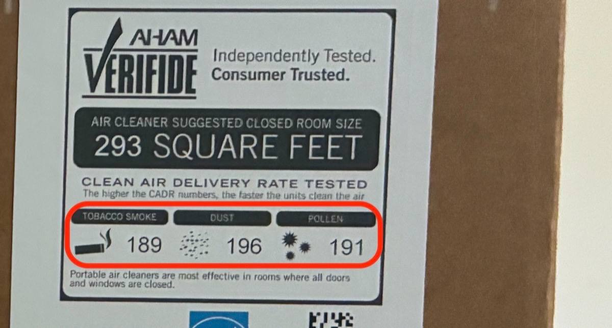

How to get cleaner air in your room
Find the right air cleaner for your room or see what room size your current air cleaner can handle.
Step 1 of 3
What size is your room?
Target: 2 air changes per hour
Cooking or another big source of indoor pollution? CARB recommends 3 air changes per hour — choose “Enter my own target.”
One air change means the cleaner has filtered a full room’s worth of air. CARB recommends at least 2 per hour, and 3 for rooms with cooking or another large indoor pollution source.
You would need — additional air cleaners with the same rating
Or swap in stronger air cleaners.
A listing qualifies if it claims any ONE of these:
Listing quotes a different ACH? Compare it against the next lower row.
For the room and air quality conditions you selected, choose an air cleaner with a CADR of — or higher.
Learn more
What does CADR mean?
CADR stands for Clean Air Delivery Rate. It tells you how much filtered air an air cleaner can provide. A higher number means the air cleaner can clean a larger space or provide more air cleaning.
Where do I find the CADR?
Look on the product box, product specifications, user manual, or manufacturer’s website. You may see several CADR numbers. Use the lowest CADR listed.
Your setup delivers — air changes per hour, against your target of 2.
Your cleaner covers a room up to —, while your room is about —.
Box says something different? Air cleaner packaging lists a room size based on about 5 air changes per hour, so it won’t match the coverage shown here unless that’s your target too.
Where to find an air cleaner’s rating
- Look for the CADR (Clean Air Delivery Rate) on the air cleaner’s box, manual, or manufacturer’s website.
- You may see three CADR numbers for smoke, dust, and pollen. Enter the lowest number.
- If you don’t see CADR, look for an airflow rating in CFM and enter that number.
- If your air cleaner only lists Air Changes per Hour (ACH), select "Enter Air Changes per Hour instead."

Need help finding it?
- Check the front of the box — the AHAM Verifide label is usually there.
- Check the specifications panel on the side or the back of the box.
- Check the manual, in the specifications section.
- Search the model number on the manufacturer’s website and open its specifications page.
- If it only lists air changes per hour (ACH), also note the room size that rating was measured in — the tool asks for both.
Get the most from your air cleaner
- Remove the plastic. Take all plastic wrapping off the filter before using your air cleaner.
- Close windows and doors while the air cleaner is running.
- Put it where you spend the most time, such as your bedroom.
- Give it space. Keep at least one foot of open space around the air cleaner so air can flow freely.
- Keep it out of corners. Place it along a wall where air can move around it.
- Using more than one? Place them on opposite sides of the room.
- Replace the filter regularly. Follow the instructions for your air cleaner. A dirty filter won’t clean the air as well.
Air cleaner certification
Since 2010, all portable indoor air cleaning devices sold to people or businesses in California are required to be certified by the California Air Resources Board. See CARB’s list of certified air cleaning devices.
Air cleaner
If you see three CADR numbers, enter the lowest.
In what size room was that measured?